Theoretical densities
One of the more useful tools for inspecting your data is to view the
density of datapoints. There are great ways of doing this, such as
histograms and kernel density estimates (KDEs). However, sometimes you
might wonder how the density of your data compares to the density of a
theoretical distribution, such as a normal or Poisson distribution. The
stat_theodensity() function estimates the necessary
parameters for a range of distributions and calculates the probability
density for continuous distributions or probability mass for discrete
distributions. The function uses maximum likelihood procedures through
the fitdistrplus package.
Continuous distributions
Plotting continuous distributions is straightforward enough. You just
tell stat_theodensity() what distribution you’d like to
fit. It automatically performs the fitting for groups separately, as
shown in the example below where we artificially split up the faithful
data.
df <- faithful
df$group <- ifelse(df$eruptions > 3, "High", "Low")
ggplot(df, aes(eruptions, colour = group)) +
stat_theodensity(distri = "gamma") +
geom_rug()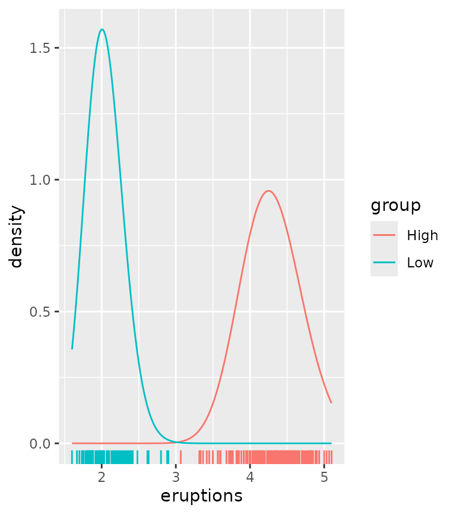
We can compare this to kernel density estimates, which are more empirical.
ggplot(df, aes(eruptions, colour = group)) +
stat_theodensity(distri = "gamma",
aes(linetype = "Theoretical")) +
stat_density(aes(linetype = "Kernel Estimates"),
geom = "line", position = "identity") +
geom_rug()
There are a few tricky distributions for which there exist no sensible starting values, such as the Student t-distribution and the F-distribution. You would have to provide a sensible-ish starting value for the degrees of freedom for these.
tdist <- data.frame(
x = c(rt(1000, df = 2), rt(1000, df = 4)),
group = rep(LETTERS[1:2], each = 1000)
)
ggplot(tdist, aes(x, colour = group)) +
stat_theodensity(distri = "t", start.arg = list(df = 3))
fdist <- data.frame(
x = c(rf(1000, df1 = 4, df2 = 8), rf(1000, df1 = 8, df2 = 16)),
group = rep(LETTERS[1:2], each = 1000)
)
ggplot(fdist, aes(x, colour = group)) +
stat_theodensity(distri = "f", start.arg = list(df1 = 3, df2 = 3))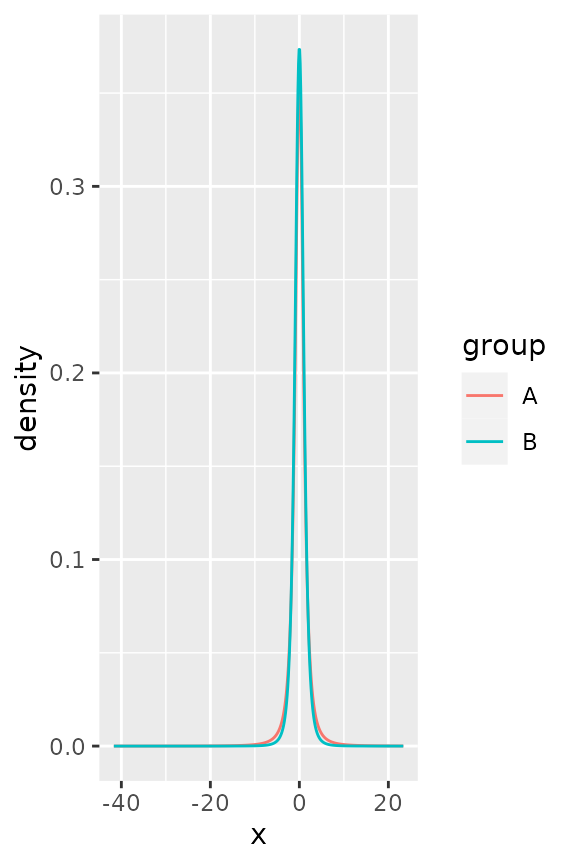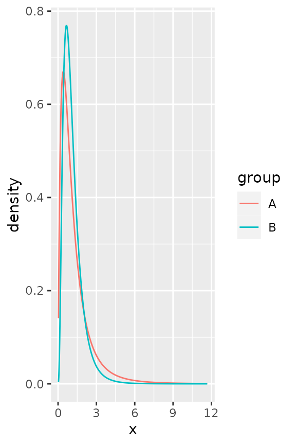
Discrete distributions
The way stat_theodensity() handles discrete
distributions is similar to how it handles continuous distributions. The
main difference is that discrete distributions require whole number or
integer input.
correct <- data.frame(
x = c(rpois(1000, 5), rnbinom(1000, 2, mu = 5)),
group = rep(LETTERS[1:2], each = 1000)
)
incorrect <- correct
# Change a number to non-integer
incorrect$x[15] <- sqrt(2)
ggplot(incorrect, aes(x, colour = group)) +
stat_theodensity(distri = "nbinom")
#> Error in `stat_theodensity()`:
#> ! Problem while computing stat.
#> ℹ Error occurred in the 1st layer.
#> Caused by error in `setup_params()`:
#> ! A discrete 'nbinom' distribution cannot be fitted to continuous data.
ggplot(correct, aes(x, colour = group)) +
stat_theodensity(distri = "nbinom")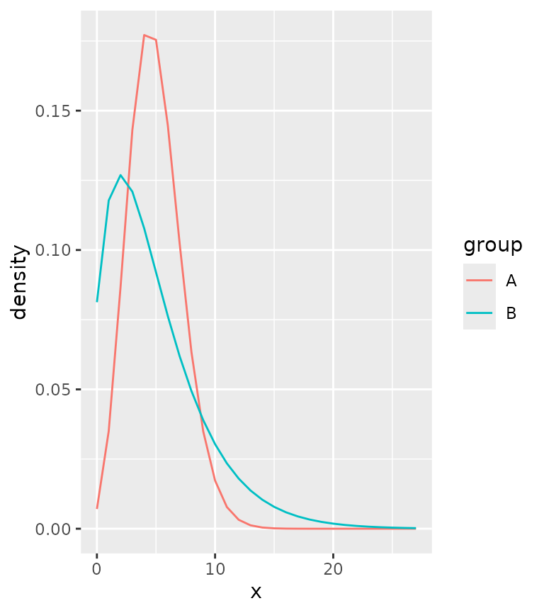
A practical difference can be seen above: using simple lines are not very appropriate for discrete distributions, as they imply a continuity that is not there.
Instead, one can work with centred steps:
ggplot(correct, aes(x, colour = group)) +
stat_theodensity(distri = "nbinom", geom = "step",
position = position_nudge(x = -0.5))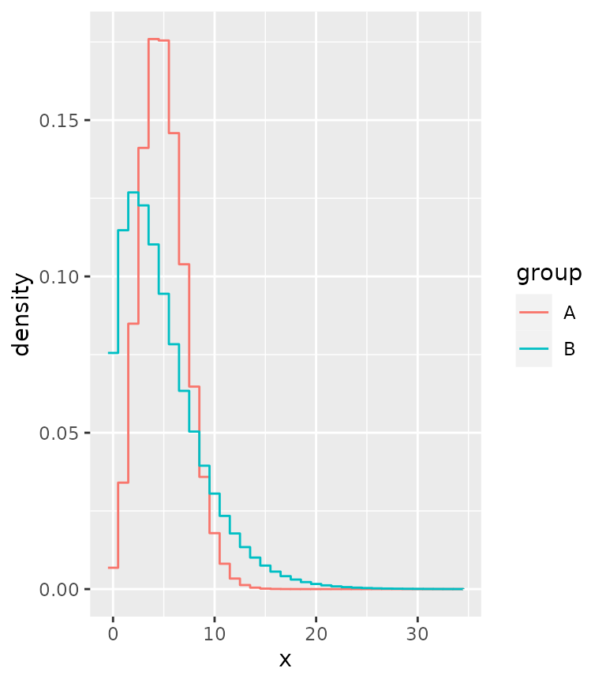
Or perhaps most appropriately, you can display the distributions as probability masses through lollipops.
ggplot(correct, aes(x, colour = group)) +
stat_theodensity(distri = "nbinom", geom = "segment",
aes(xend = after_stat(x), yend = 0), alpha = 0.5) +
stat_theodensity(distri = "nbinom", geom = "point",
aes(xend = after_stat(x), yend = 0))
#> Warning in stat_theodensity(distri = "nbinom", geom = "point", aes(xend =
#> after_stat(x), : Ignoring unknown aesthetics: xend and
#> yend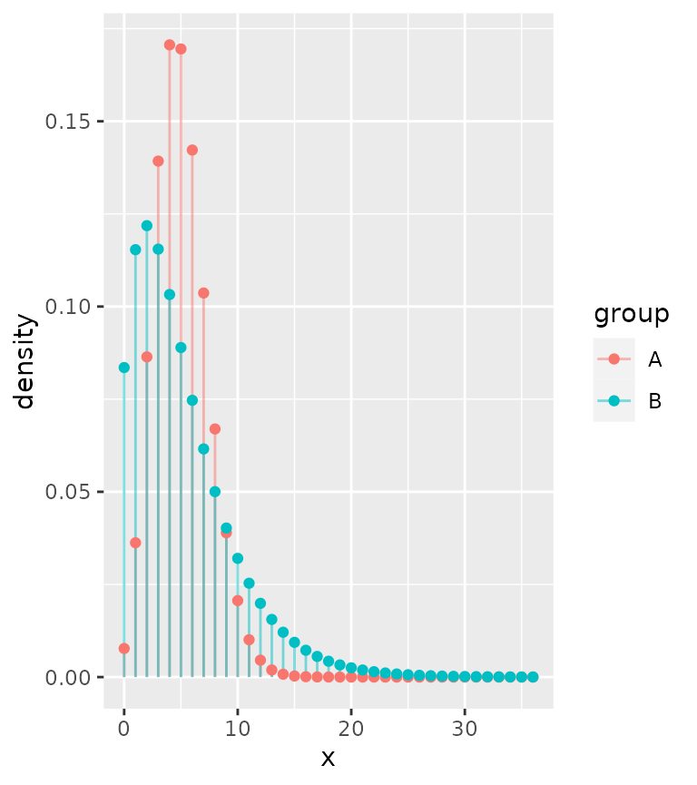
Comparing different distributions
Let’s say we are given the task of comparing how well different distributions fit the same data. While we can use more qualitative methods, having a look at the distributions is still a useful tool. We’ll generate some data and see how it works. We’ll fit a normal and Cauchy distribution to the data and plot their densities.
set.seed(0)
df <- data.frame(x = rnorm(1000, 10, 1/rgamma(1000, 5, 0.2)))
ggplot(df, aes(x)) +
stat_theodensity(aes(colour = "Normal"), distri = "norm") +
stat_theodensity(aes(colour = "Cauchy"), distri = "cauchy") +
geom_rug(alpha = 0.1)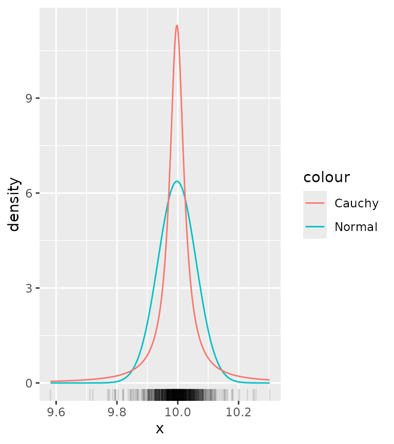
From this it is quite hard to see what distribution more appropriately fits the data. To get a clearer view, we can use a histogram instead of a rug plot. The problem though is that by default, histograms work with count data, whereas densities are integrated to sum to 1.
ggplot(df, aes(x)) +
geom_histogram(binwidth = 0.01, alpha = 0.5) +
stat_theodensity(aes(colour = "Normal"), distri = "norm") +
stat_theodensity(aes(colour = "Cauchy"), distri = "cauchy")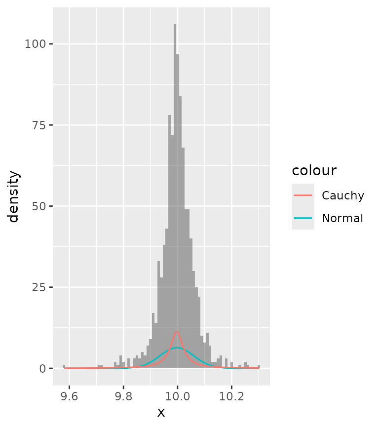
There are two possible solutions to this:
- Scale the histogram to densities.
- Scale the densities to counts.
A nice thing that ggplot2 provides is access to computed variables
with the after_stat() function. Luckily, one of the
computed variables in histograms already is the density.
ggplot(df, aes(x)) +
geom_histogram(aes(y = after_stat(density)),
binwidth = 0.01, alpha = 0.5) +
stat_theodensity(aes(colour = "Normal"), distri = "norm") +
stat_theodensity(aes(colour = "Cauchy"), distri = "cauchy")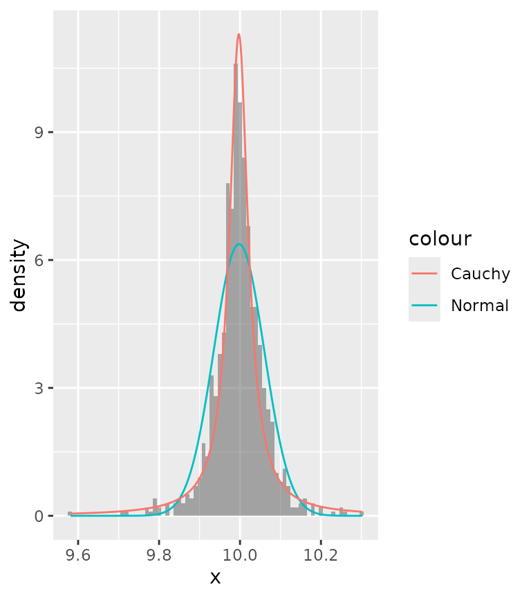
Now we can see that probably the Cauchy distribution fits better than the normal distribution.
Alternatively, you can also scale the densities to counts. To do
this, we must know the binwidth of the histogram. Since different layers
in ggplot2 don’t communicate, we have to set these manually. Just like
histograms provide the density as computed variable, so too does
stat_theodensity() provide a count computed variable, which
is the density multiplied by the number of observations.
binwidth <- 0.01
ggplot(df, aes(x)) +
geom_histogram(alpha = 0.5, binwidth = binwidth) +
stat_theodensity(aes(y = after_stat(count * binwidth),
colour = "Normal"),
distri = "norm") +
stat_theodensity(aes(y = after_stat(count * binwidth),
colour = "Cauchy"),
distri = "cauchy")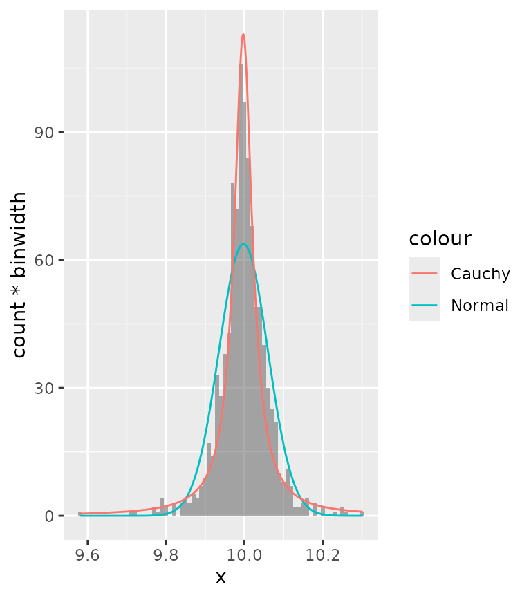
Rolling kernels
A rolling kernel is a method that generates a trend line that doesn’t require specifying a model, but is also very bad at extrapolating. It is similar to a rolling window, but data does not need to be equally spaced. An attempt at illustrating the concept you’ll find below.
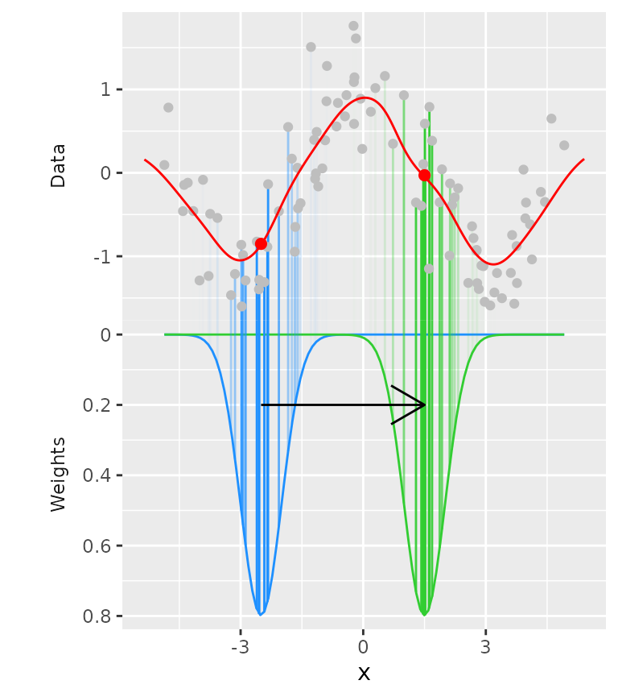
For every position on the x-axis, a kernel (above: Gaussian kernel in blue and green) determines the weight of datapoints based on their distance on the x-axis to the position being measured. Then, a weighted mean is calculated that determines the values on the y-axis (red dots).
Examples
Below is an example for a Gaussian kernel on the mpg
dataset.
ggplot(mpg, aes(displ, hwy, colour = class)) +
geom_point() +
stat_rollingkernel()It is pretty easy to visualise areas of uncertainty by setting the alpha to scaled weights. This emphasises data-dense areas of the lines.
ggplot(mpg, aes(displ, hwy, colour = class)) +
geom_point() +
stat_rollingkernel(aes(alpha = after_stat(scaled)))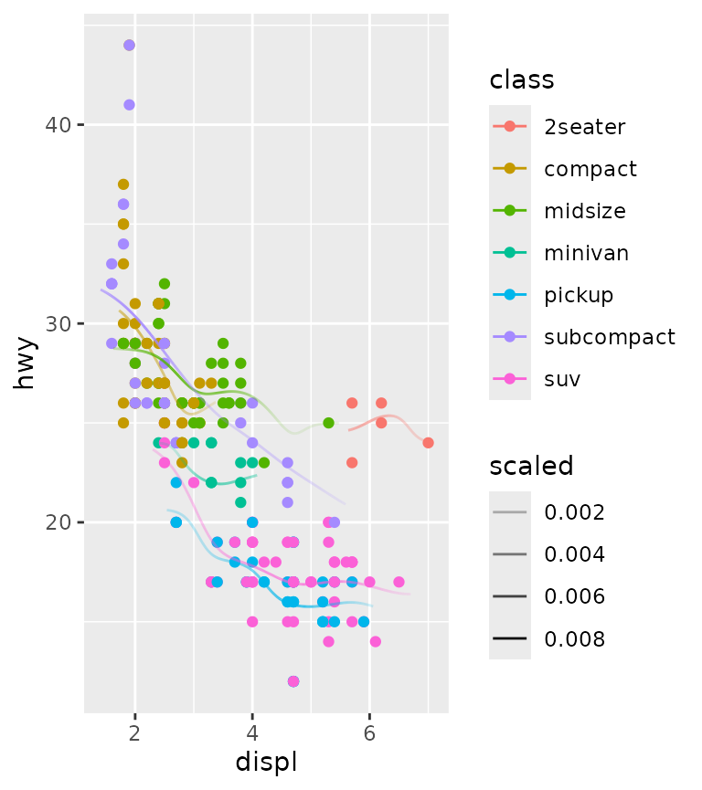
Relation to kernel density estimates
It may seem pretty trivial, but using the weights as the y position gives something very similar to kernel density estimates. The defaults for the bandwidth differ slightly, so we exaggerate the similarity by setting them equal here.
ggplot(mpg, aes(displ, hwy, colour = class)) +
stat_rollingkernel(aes(y = stage(hwy, after_stat = weight),
linetype = "Rolling\nKernel"),
bw = 0.3) +
stat_density(aes(displ, colour = class,
y = after_stat(count),
linetype = "KDE"),
bw = 0.3,
inherit.aes = FALSE, geom = "line", position = "identity") +
scale_linetype_manual(values = c(2, 1))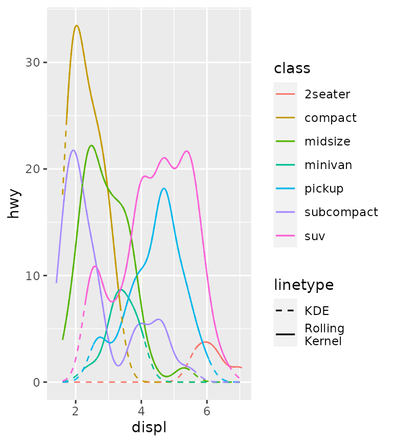
Rolling mean
As a final note on this stat, a rolling mean-equivalent can be
calculated using the "mean" kernel. This is the same as
setting the kernel to "unif", since it uses the uniform
distribution as kernel. Typically, this is a bit more blocky than using
Gaussian kernels.
ggplot(mpg, aes(displ, hwy, colour = class)) +
geom_point() +
stat_rollingkernel(kernel = "mean", bw = 1)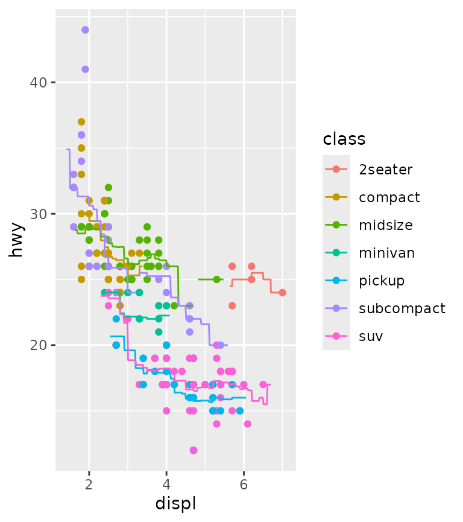
Difference
Motivation
Many people who try to illustrate the difference between two lines
might have run into the following problem. In the example below we want
to illustrate the difference between the uempmed and
psavert variables from the economics dataset,
and change the colour of a ribbon depending on which of the variables is
larger. Because the groups are inferred from the fill colour, and there
are small islands where uempmed > psavert is true, the
ribbon will be drawn in an overlapping way. This makes perfect sense for
many visualisations, but is an inconvenience when we just want to plot
the difference.
g <- ggplot(economics, aes(date))
g + geom_ribbon(aes(ymin = pmin(psavert, uempmed),
ymax = pmax(psavert, uempmed),
fill = uempmed > psavert),
alpha = 0.8)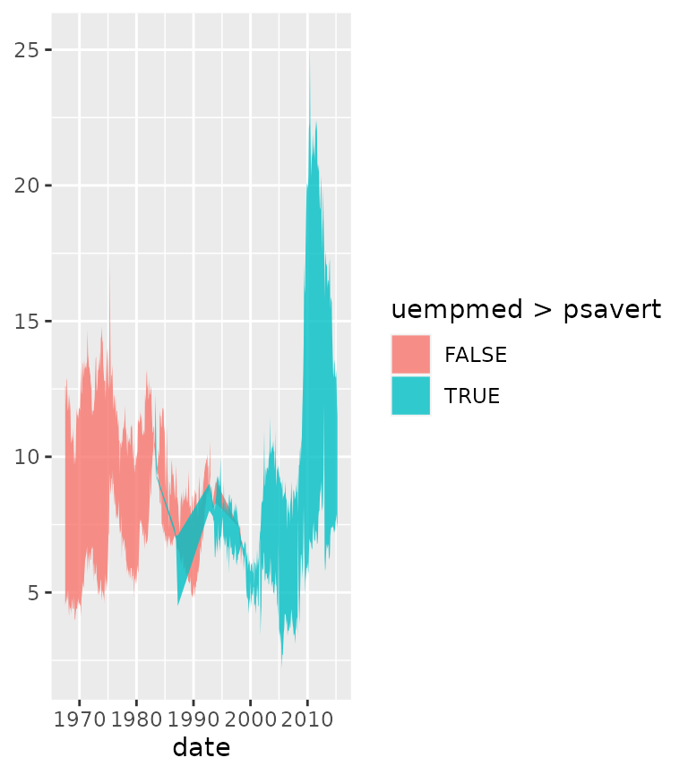
To circumvent this inconvenience, stat_difference() uses
run-length encoding to re-assign the groups and adds a sign
variable to keep track which of the two variables is larger. By default,
the fill is populated with the sign variable.
We can control the name of the filled areas by using the
levels argument.
g + stat_difference(
aes(ymin = psavert, ymax = uempmed),
levels = c("More uempmed", "More psavert"),
alpha = 0.8
)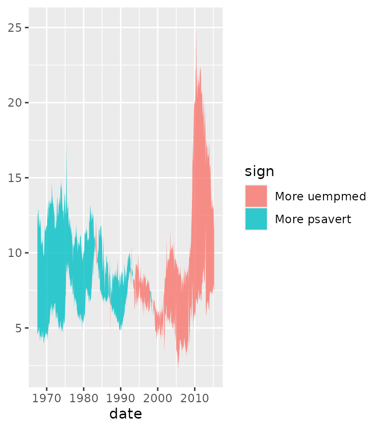
Interpolation
An additional nicety of stat_difference() is that it
interpolates the cross-over points of lines. It’s not very visible in
the densely populated graph above, but we can generate some dummy data
to show what we mean.
df <- data.frame(
x = c(1:4), ymin = c(0, 1, 2, 2.5), ymax = c(2.5, 2, 1, 0.5)
)
g <- ggplot(df, aes(x, ymin = ymin, ymax = ymax)) +
guides(fill = 'none') +
geom_point(aes(y = ymin)) +
geom_point(aes(y = ymax))
g + geom_ribbon(aes(fill = ymax < ymin)) +
ggtitle("Plain ribbon")
g + stat_difference() +
ggtitle("stat_difference()")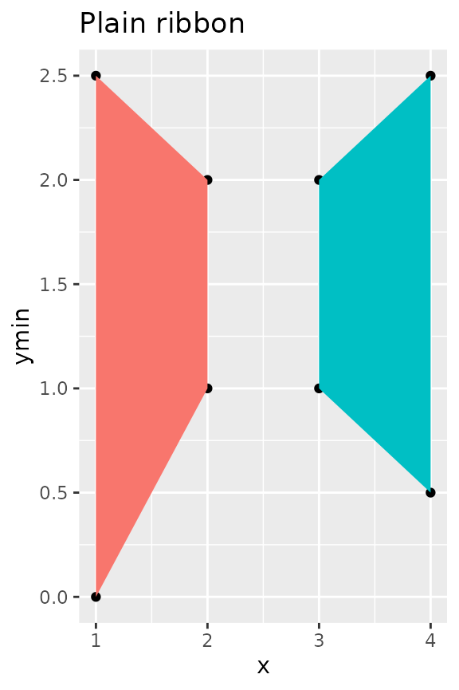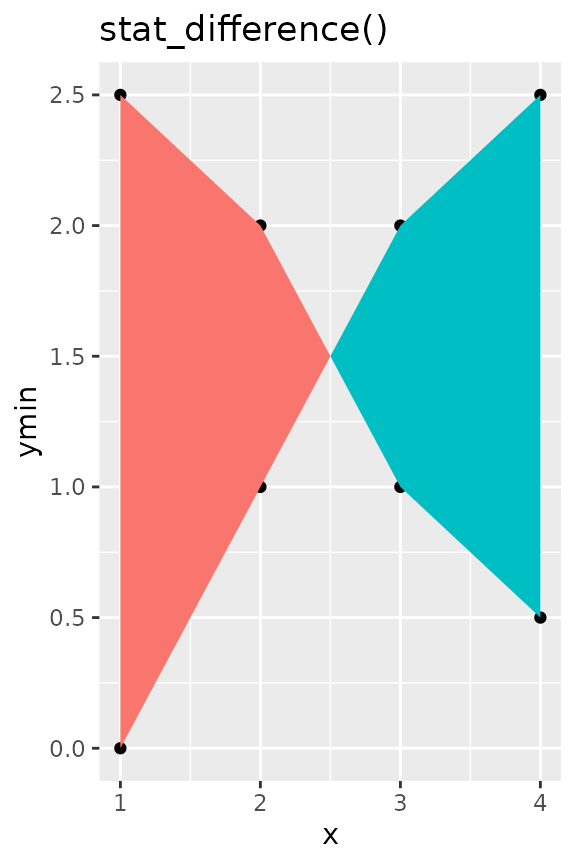
Function X, Y
Sometimes, you just want to calculate a simple function on the x- and
y-positions of your data by group. That is where
stat_funxy() comes in. It takes two functions as arguments,
one to be applied to the x-coordinates and one to be applied to the
y-coordinates. The primary limitation of this stat is that you cannot
use functions that are supposed to work on the x- and y-positions
simultaneously.
For example, it is pretty easy to combine range and
mean to construct range indicators.
df <- faithful
df$group <- ifelse(df$eruptions > 3, "High", "Low")
ggplot(df, aes(waiting, eruptions, group = group)) +
geom_point() +
stat_funxy(aes(colour = group),
funx = range, funy = mean, geom = "line",
arrow = arrow(ends = "both"))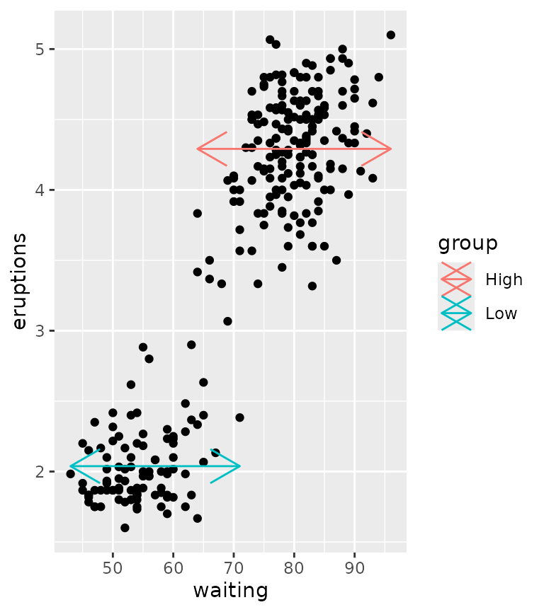
Centroids and midpoints
There are also two variations on stat_funxy() and that
are stat_centroid() and stat_midpoint(). While
the default function arguments in stat_funxy() do nothing,
the default for stat_centroid() is to take the means of x-
and y-positions and stat_midpoint() takes the mean of the
range. Under the hood, these are still stat_funxy(), but
have default functions. The centroid and midpoint stats are convenient
to label groups, for example.
ggplot(df, aes(waiting, eruptions, group = group)) +
geom_point() +
stat_centroid(aes(label = "Centroid"), colour = "dodgerblue",
geom = "label") +
stat_midpoint(aes(label = "Midpoint"), colour = "limegreen",
geom = "label")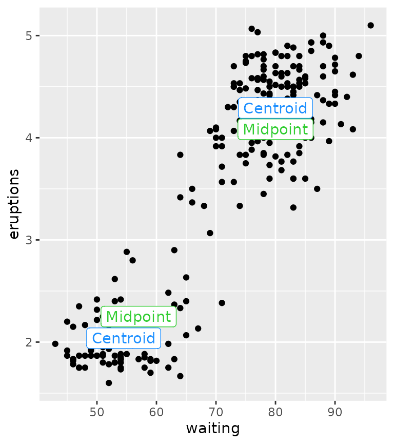
Cropping data
While for the general case the data should be cropped to the lengths
of the function outputs, you can change this behaviour by setting
crop_other = FALSE. This might be convenient when you might
have other aesthetics that you care about, in the same group. Not
cropping other data probably only makes sense if the functions you
provide return a single summary statistic though.
ggplot(df, aes(waiting, eruptions, group = group)) +
stat_centroid(aes(xend = waiting, yend = eruptions, colour = group),
geom = "segment", crop_other = FALSE) +
geom_point(size = 0.25)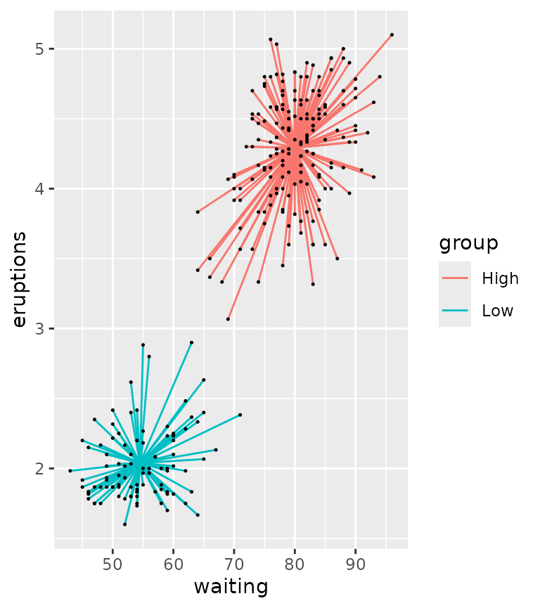
Run length encoding
Run length encoding (RLE) is useful as a data compression mechanism,
but can also be useful in plotting to check if subsequent conditions are
being fulfilled. The default behaviour of stat_rle() is to
draw rectangles in the regions where a series of values (a run) have the
same value. Let’s say I have the following series:
A-A-A-A-B-B-B-C-C-D
This series can be compacted by run length encoding, but can also be useful to extract the following properties:
| run_id | run_value | run_length | start_id | end_id |
|---|---|---|---|---|
| 1 | A | 4 | 1 | 4 |
| 2 | B | 3 | 5 | 7 |
| 3 | C | 2 | 8 | 9 |
| 4 | D | 1 | 10 | 10 |
Examples
In the example below, we’ll use the cut() function to
divide the y-values into three bins, and use the stat_rle()
to draw rectangles where datapoints fall into these bins.
df <- data.frame(
x = seq(0, 10, length.out = 100)
)
df$y <- cos(df$x)
ggplot(df, aes(x, y)) +
stat_rle(aes(label = cut(y, breaks = 3))) +
geom_point()
#> Warning: The following aesthetics were dropped during statistical transformation: y.
#> ℹ This can happen when ggplot fails to infer the correct grouping structure in
#> the data.
#> ℹ Did you forget to specify a `group` aesthetic or to convert a numerical
#> variable into a factor?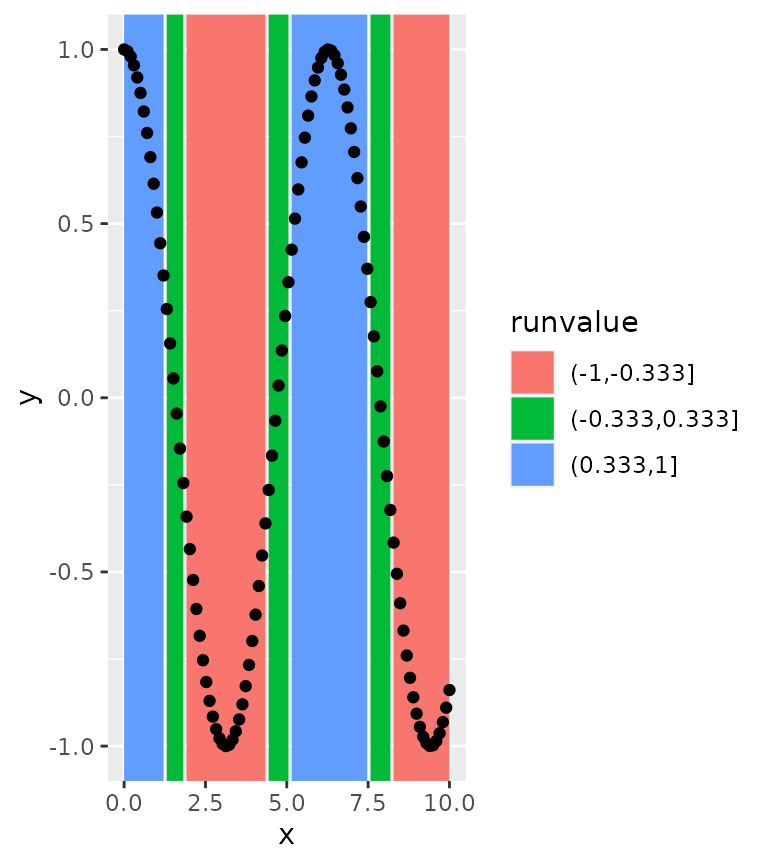
This can be made slightly more pleasing by closing gaps between rectangles.
ggplot(df, aes(x, y)) +
stat_rle(aes(label = cut(y, breaks = 3)),
align = "center") +
geom_point()
#> Warning: The following aesthetics were dropped during statistical transformation: y.
#> ℹ This can happen when ggplot fails to infer the correct grouping structure in
#> the data.
#> ℹ Did you forget to specify a `group` aesthetic or to convert a numerical
#> variable into a factor?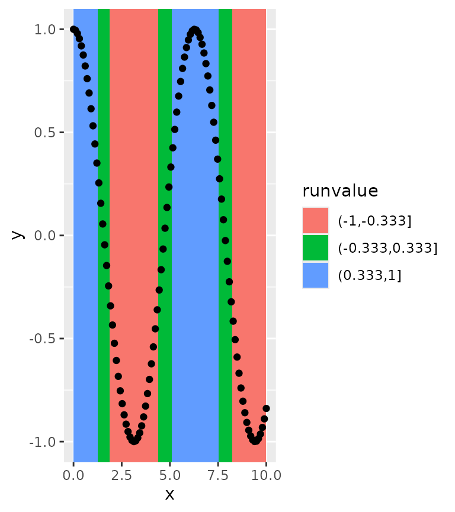
Using computed variables
An alternative use case of stat_rle() is to use the
computed variables to describe a series of data. For example, if we’d
like to summarise the above graph in just it’s runs, we might be
interested in what order the runs are and how long the runs are. If we
make use of ggplot2’s after_stat() and stage()
functions, we can grab this information from the stat.
ggplot(df) +
stat_rle(aes(stage(x, after_stat = run_id),
after_stat(runlength),
label = cut(y, breaks = 3),
fill = after_stat(runvalue)),
geom = "col")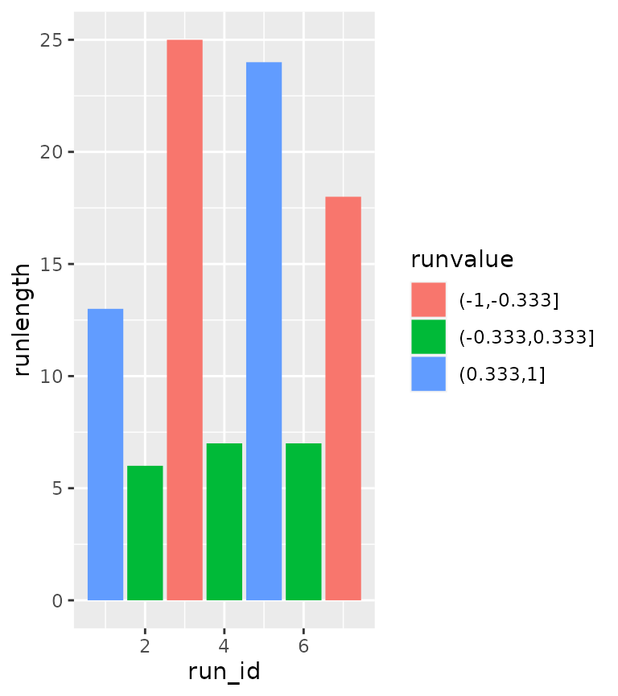